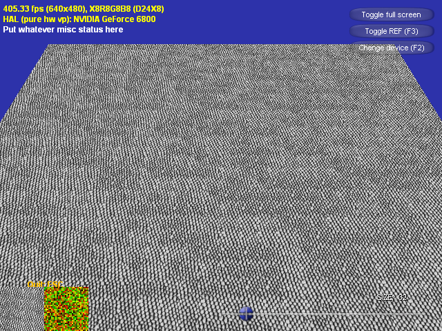

Graphics Hardware 2004 で、NVIDIA の Li-Yi Wei が、Tile-Based Texture Mapping on Graphics Hardware というタイトルで、Wang tile の紹介をしています。まえまえから興味はあったのですが、ほったらかしてあったので実装してみました。
で、いつものようにプログラムです。
スライダーを動かすと、マップの細かさが変わります。
ソースには、いつものように適当にファイルが入っています。 大事なファイルは次のものです。
| main.cpp | アプリケーションのソース |
| main.fx | シェーダプログラム |
そもそもワンの絨毯とは何かということですが、基本的には1961年からある純粋な数学の問題[Wang 1961]らしいです。適当にググって見ると、 「4辺に色を塗ったタイルが何種類か与えられた時、与えられた種類のタイルだけを使って接している辺の色が隣のタイルの辺と同じであるようにしながら平面全体をタイルで敷き詰められるかどうかを判定する問題。(http://www.ice.nuie.nagoya-u.ac.jp/~h003149b/lang/undecidable.html)」というのが得られたり、Wikipediaに詳細な情報が詰まっていたりします。
[Wang 1961] Wang, H. (1961), Bell System Tech. Journal 40(1961), pp. 1-42. (Wang proposes his tiles, and hypothesizes there are no aperiodic sets).
で、ＣＧ的には、この問題をＧＰＵを使って解くとかでは全然無くて、ゲームを見てると明らかにテクスチャを繰り返しているような場面が見えますよね。あれを wang tile で使っているようなタイルを使って解消しようという問題になっています。
ここでの、Wang tile は、小さなタイルを敷き詰めて１つの絵を作ります。
タイルは、各辺にＩＤをつけておきます。下の例では、各辺に赤と緑のＩＤをつけています（完成した絵には色は付きません）。
ＩＤが同じ辺は右と左及び、上と下でスムーズにつながるようにタイルを作っておきます。
上下左右のＩＤが等しくなるようにランダムにＩＤを振って、対応するタイルを敷き詰めれば、綺麗につながったランダムな画像が作れます。
このタイルを敷き詰める方法は難しくはありません。
迷路作成で言えば、棒倒し法と同じ方法を実践します。
例えば左上から順番に敷き詰めていきましょう。まず、最初はランダムにＩＤを振ります。次に右に移ります。左側はすでに決まっているので、それ以外の上下右をランダムにＩＤを振ります。そのまま同じように右に進んで上側のパターンを作ります。次の列に移ります。また左側から始めるとしましょう。上の段は決まっているので、下左右にランダムにＩＤを振ります。その右側は上と左のＩＤが決まっているので、右と下にＩＤをランダムに振ってタイルを決定します。以降、端の部分以外は、右と下にランダムにＩＤをふれば、ワンの絨毯が出来上がります。
ここでは、赤と緑という２種類のＩＤを持つタイルを扱いましたが、ＩＤの種類は何種類でも大丈夫です。ただし、ＩＤの種類が増えるほど必要なタイルの枚数が多くなります。必要になるタイルの枚数は、（ＩＤの種類）4で増えます。２種類なら１６、３種類なら８１、４種類なら２５６です。３種類か４種類になってくると自動で作るシステムを作らないと駄目でしょうね。
今回の実装ですが、２種類のテクスチャを使います。１つは、ＩＤが何かを表現しているランダムな「ハッシュテクスチャ」
です。このテクスチャでは、１テクセルがタイルの１つに対応しています。 テクセルの赤成分が0.5より大きいかどうかで左辺のIDが０か１かを判定していて、 緑成分で上辺のＩＤを判定します（先ほどまでのＩＤの１つが赤でもう１つが緑の説明と混同しないように注意してください）。右辺と下辺は隣接するテクセルをサンプリングすることによって情報を得ることができます（少し面倒くさいですが、青成分とアルファ成分に隣接する情報を格納すればサンプリング回数を減らすこともできますが、分かりやすさのために、今回はこの方法を採用しています）。
もう１つは、タイルのテクスチャです。今回は白黒のシンプルなものを使いました。
これは、１６個のタイルを１つのテクスチャに敷き詰めています。
さて、この分解した絵をよく見ると、このテクスチャは良く考えられて構成されていることが分かります（Wei氏が考えたのでしょうか？すごいです）。
タイルを縦に見ると、縦に並んでいるタイルは全て左右のＩＤが同じになっています。
また、タイルを横に見ると、横に並んでいるタイルは全て上下のＩＤが同じになっています。
また、テクスチャは連続につながっています（wrapまでも考慮に入れて！）。
つまり、ＩＤからタイルのＵＶ値を演繹的に求められるようになっていますし、それぞれの境界で問題がおきにくくなっています。
で、どのようにＩＤを求めれば良いかですが、考えるのが面倒くさかったので、単純に条件分岐で作ってみました。
main.fx
0097: float4 WangPS( VS_OUTPUT In ) : COLOR
0098: {
0099: float2 TexCoord;
0100: float2 Tex;
0101:
0102: TexCoord.x = 0.25 * frac( g_fTexSize * In.TextureUV.x );
0103: TexCoord.y = 0.25 * frac( g_fTexSize * In.TextureUV.y );
0104:
0105: float2 e0 = tex2D( RandSampler, In.TextureUV ).xy;
0106: float ex = tex2D( RandSampler, In.TextureUV + float2( g_fInvTexSize, 0.0 ) ).x;
0107: float ey = tex2D( RandSampler, In.TextureUV + float2( 0.0, g_fInvTexSize ) ).y;
0108:
0109: if( e0.x < 0.5 )
0110: {
0111: if( ex < 0.5 )
0112: {
0113: // TexCoord.x += 0.0;
0114: }else{
0115: TexCoord.x += 0.25;
0116: }
0117: }else{
0118: if( ex < 0.5 )
0119: {
0120: TexCoord.x += 0.75;
0121: }else{
0122: TexCoord.x += 0.50;
0123: }
0124: }
0125: if( ey < 0.5 )
0126: {
0127: if( e0.y < 0.5 )
0128: {
0129: TexCoord.y += 0.75;
0130: }else{
0131: TexCoord.y += 0.50;
0132: }
0133: }else{
0134: if( e0.y < 0.5 )
0135: {
0136: // TexCoord.y += 0.0;
0137: }else{
0138: TexCoord.y += 0.25;
0139: }
0140: }
0141:
0142: return tex2D( WangSampler, TexCoord );
0143: }
In.TextureUV に、四角形ポリゴン全体で０〜１となるテクスチャ座標値が入っています。
g_fTexSize が、ハッシュテクスチャのサイズで、g_fInvTexSize がその逆数です。
TexCoord に、タイルパターンのテクスチャでの相対テクスチャ座標値を最初に入れておき、そのあとハッシュテクスチャからオフセット値を求めます。
まぁ、某所でも話題としてでていたのですが、エフェクトファイルはあまり他人には見せたくないですよね。ということで、今回は実行ファイルにエフェクトのデータを埋め込んで見ました。
エフェクトのコンパイルには、fxc.exeを使うのですが、いちいちコマンドプロンプトから打ち込むのは面倒くさいのでバッチファイルを作ってみました。
compile_effect.bat 0001:"%DXSDK_DIR%Utilities\fxc" /Tfx_2_0 /Eeffect /Fhmain_fx.h main.fx 0002:pause
エフェクトを編集したら、このバッチファイルを実行して、main_fx.h を作成します （エラーがでたら分かるように、終わったらpauseでとめてみるようにしてみました）。 main_fx.h には、「const DWORD g_effect[] = {...};」のような変数ができますので、C++プログラムのほうでは、次のようにエフェクトインターフェイスを作成します。
main.cpp 0332: V_RETURN( D3DXCreateEffect( pd3dDevice, g_effect, sizeof(g_effect), 0333: NULL, NULL, dwShaderFlags, NULL, &g_pEffect, NULL ) );
ポーズがうざいですね。返り値かなんかをみて、エラーのときだけポーズとかできないかな…
erakan さんにエラーレベルを見てポーズを掛けるバッチファイルをいただきました。 一般的にこちらを使うほうが良いと思います。
compile_effect.bat 0001:"%DXSDK_DIR%Utilities\fxc" /Tfx_2_0 /Eeffect /Fhmain_fx.h main.fx 0002:@if not %ERRORLEVEL% == 0 pause
ありがとうございました。
実は、ミップマップを掛けてみたらおかしな表示になってしまったんですよ。 ということで、今回ははずしています。
今回のプログラムもテクスチャに Li-Yi Wei が使ったものを使うと、下のようになるのですが、エッジの処理で無理があって基のテクスチャに偏りがあるのか、ちょっとパターンが見えます。 テクスチャの作成技術も問われるのが難しいところです。
でも、Wang tile は、効果が大きいので、実際に使っていきたいですね。
erakan さんからミップマップ版に変更するソースをいただきました。
ハードウェアのミップマップ機能を使うのではなく、全てのミップマップレベルを含む１枚のテクスチャを作成して、そこから全てサンプリングすることによって、タイルの隙間で不整合の起きない正確なミップマップを掛けています。
なお、各ミップマップレベルは、１テクセル分の幅だけ周辺に広げており、バイリニアフィルタでも問題が起きないようになっています。
「@@@」の付いている部分が wang.zip からの変更部分になります。
| main.cpp | アプリケーションのソース |
| main.fx | シェーダプログラム |
| compile_effect.bat | エラーのときだけポーズするバージョン |